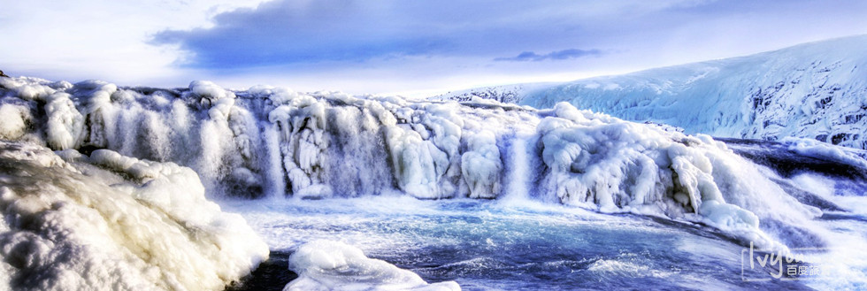
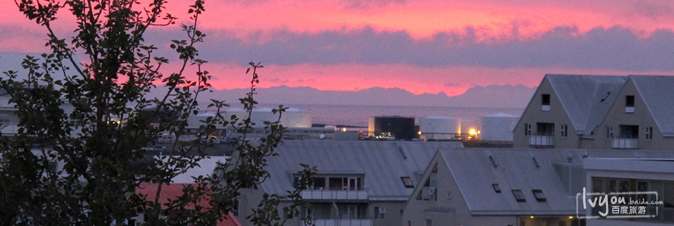
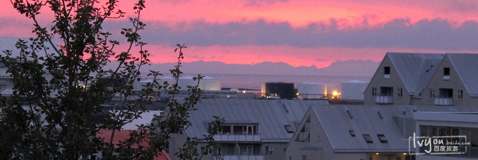
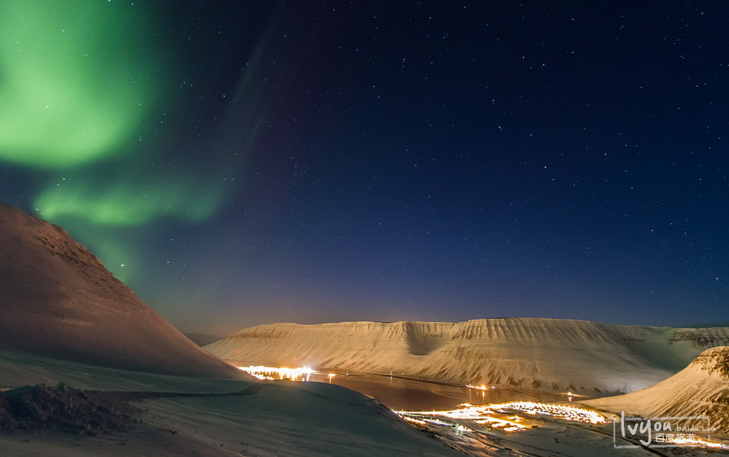
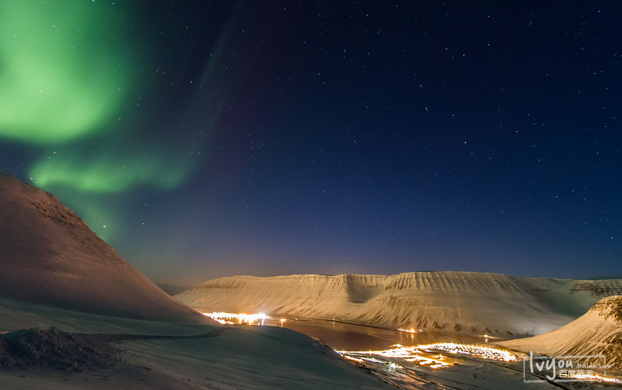
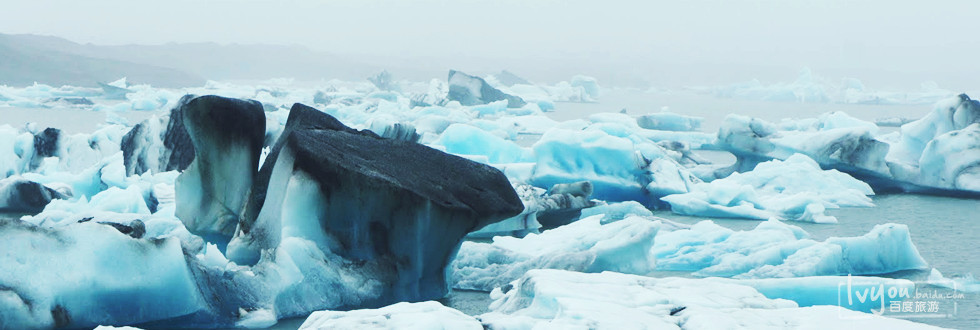
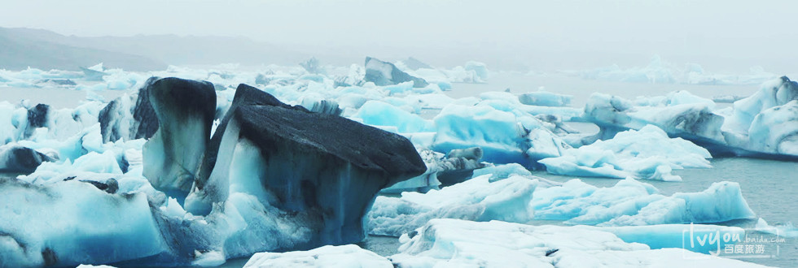

雷克雅未克
冰岛首都雷克雅未克 （Reykjavik) 位于冰岛西部法赫萨湾东南角、塞尔蒂亚纳半岛北侧，是冰岛最大的港口城市。
雷克雅未克城市道路发达，环境极为整洁，是一座现代化的城市，同时又是冰岛政治、文化、教育和贸易中心。
雷克雅未克成为冰岛的首都是第二次世界大战结束后，冰岛脱离丹麦成为共和国。雷克雅未克也随之成为了世界游客蜂拥而至的游览目的地。 整个城市很少使用煤。因空气清新、无煤烟困扰，由此该市得到一个美称“无烟城市”。 雷克雅未克城市布局匀称和谐，无摩天大楼，居民住房小巧玲珑，大多是两层小楼，风格各异，色彩也不雷同。市内街道不宽，整个老城区街道经纬分明，给人以古色古香、整齐美丽、宁静优美之感。
世界上没有哪座城市像雷克雅未克一样，能与自然如此和谐的相处，在崇尚回归自然的当今社会里，游客们可以在这享用一些特独的户外运动。除了怡人的新旧市区、冰岛大学等人文景观外，还有黄金瀑布、间歇泉、托宁湖等美景。
雷克雅未克成为冰岛的首都是第二次世界大战结束后，冰岛脱离丹麦成为共和国。雷克雅未克也随之成为了世界游客蜂拥而至的游览目的地。 整个城市很少使用煤。因空气清新、无煤烟困扰，由此该市得到一个美称“无烟城市”。 雷克雅未克城市布局匀称和谐，无摩天大楼，居民住房小巧玲珑，大多是两层小楼，风格各异，色彩也不雷同。市内街道不宽，整个老城区街道经纬分明，给人以古色古香、整齐美丽、宁静优美之感。
世界上没有哪座城市像雷克雅未克一样，能与自然如此和谐的相处，在崇尚回归自然的当今社会里，游客们可以在这享用一些特独的户外运动。除了怡人的新旧市区、冰岛大学等人文景观外，还有黄金瀑布、间歇泉、托宁湖等美景。
伊萨菲厄泽
伊萨菲厄泽(Isafjordur)是冰岛西峡湾区的一个城市。来到这里你会感觉仿佛走到了世界的尽头，这里是西峡湾最大的定居点，在令人眩晕的群山和深深的峡谷中，除了群鸟得声音整个世界都是荒凉而平静的。
这儿文化生活活跃，堪称令人神往的“古城”，从不同的视角展现了早期的城镇。伊萨菲厄泽是冰岛最古老的定居点之一，它的文化博物馆很重要，向人们诉说着过去的故事。这儿也有饭店和咖啡馆。 伊萨菲厄泽附近有各种景点和活动，无论短途还是长途的徒步旅行，这儿的地貌都是首选。这儿主要是狭小的峡湾、陡削的山岭。
很多游客会耗费多日驾车穿过峡湾，欣赏崇山峻岭，有些山岭直入大海。绕着峡湾划船旅行，可以看到不一样的风景，同时还能游览一下附近的岛屿，这样的活动很受欢迎。
这儿文化生活活跃，堪称令人神往的“古城”，从不同的视角展现了早期的城镇。伊萨菲厄泽是冰岛最古老的定居点之一，它的文化博物馆很重要，向人们诉说着过去的故事。这儿也有饭店和咖啡馆。 伊萨菲厄泽附近有各种景点和活动，无论短途还是长途的徒步旅行，这儿的地貌都是首选。这儿主要是狭小的峡湾、陡削的山岭。
很多游客会耗费多日驾车穿过峡湾，欣赏崇山峻岭，有些山岭直入大海。绕着峡湾划船旅行，可以看到不一样的风景，同时还能游览一下附近的岛屿，这样的活动很受欢迎。
瓦特纳冰川国家公园
瓦特纳冰川国家公园（Skaftafell），位于冰岛东南部，是冰岛面积最大的国家公园及自然保护区。 该公园集冰川，火山，峡谷，森林，瀑布为一体，景色壮观。
景区类型：自然保护区
最佳季节：四季皆宜，冬季最佳。
地址：South, Sprengisandsleie, 冰岛东南 18 公里
景区类型：自然保护区
最佳季节：四季皆宜，冬季最佳。
地址：South, Sprengisandsleie, 冰岛东南 18 公里